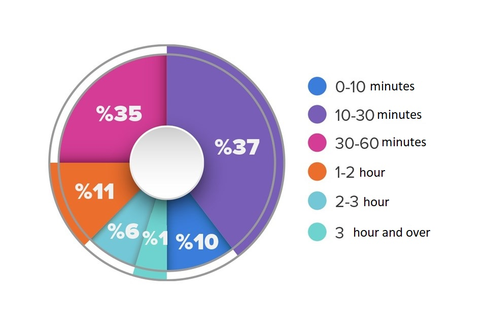

graph of women playing mobile games during the day in TURKEY.

Oyun oynamak sadece çocukların yaptığı ya da çocuklarla yapılan bir aktivite gibi algılanır ve yetişkinler için oyunun önemi pek konuşulmaz. Oysa ne kadar kolay oyun oynayabiliyorsak o kadar sağlıklı bir sinir sistemimiz, sağlıklı bir ruh dünyamız var demektir.
akısta olma terapisinde oyun oynama tedevisi uygulanır